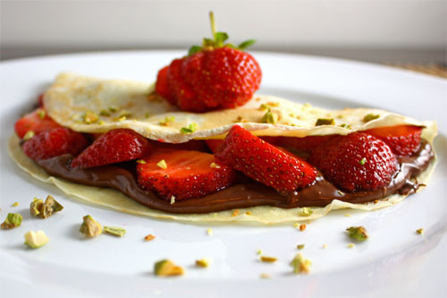

Nutella Crepe Recipe
Delicious Nutella &
Strawberry Crepe Recipe
An easy, sweet, and savory dessert or breakfast! Fast and easy, these crepes can be made at home within your own blender.
Ingredients
- 2 cups milk
- 4 large eggs
- 3 Tablespoons unsalted butter, melted and slightly cooled
- 1 Tablespoon granulated sugar
- 1 teaspoon vanilla extract
- ½ teaspoon fine sea salt or table salt
- 1 ½ cups all-purpose flour , sifted if desired
Steps
- In a blender, blend milk, eggs, butter, sugar, vanilla, salt, and flour 15 to 20 seconds, or until batter is smooth. You could also whisk in a bowl. Refrigerate at least 30 minutes, or overnight.
- Heat an 8-inch frying pan over medium-low heat. Pour about 1/4 cup batter into the pan, tilting pan immediately from side to side to form an even circle. Cook about 1 minute per side, or until lightly browned. Remove from heat and stack until ready to serve. Repeat with remaining batter.
- Serve with your favorite toppings. Fresh fruit, jams, pudding, nutella, whipped topping and nuts are a few of our favorites.